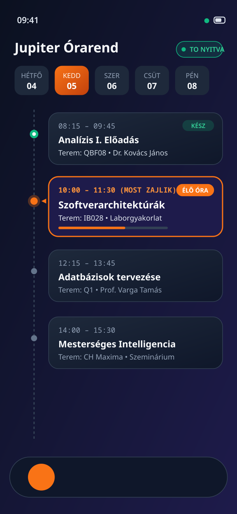

Egy modern, villámgyors és átlátható egyetemi kliens a lassú hivatalos Neptun mobilapp helyett. Nincsenek elrejtett menük vagy bosszantó hibák: csak néhány kattintás, és a kezedben a zökkenőmentes egyetemi félév.
A Universal csomag azonnal működik minden eszközön. Haladó felhasználóknak kisebb letöltési méretű, processzorra optimalizált APK-kat is biztosítunk.
Egyetlen csomagban tartalmazza az ARM64 és ARMv7 natív kódokat. A telefonod operációs rendszere telepítéskor kizárólag a megfelelő verziót bontja ki.
Kisebb letöltési méret (~33.5 MB), a mai okostelefonok több mint 95%-ához optimalizálva (Snapdragon, MediaTek, Exynos, Tensor).
Régebbi vagy belépőszintű 32 bites Android készülékekhez készített különálló telepítőcsomag.
Kattints a fenti Universal Letöltése gombra a telefonod böngészőjében.
Érintsd meg a letöltött fájlt. Ha a telefonod rákérdez, engedélyezd az ismeretlen forrásból származó telepítést.
Indítsd el a Jupiter klienst, válaszd ki a felsőoktatási intézményedet, és jelentkezz be a megszokott adataiddal!
Kattints az alábbi fülekre, és nézd meg, hogyan teszi kényelmessé a Jupiter a mindennapi egyetemi teendőket.

Az órarended azonnal betölt az intelligens kettős gyorsítótárból (Smart Dual-Cache). Soha nem maradsz le az óráidról gyenge egyetemi Wi-Fi esetén sem.
Megoldást nyújtunk a hallgatók leggyakoribb bosszúságaira: sebesség, átláthatóság és biztonság egyetlen helyen.
A Smart Dual-Cache technológia révén az órarended azonnal megjelenik megnyitáskor. Az átmeneti hálózati hibák nem törlik le a telefonodon tárolt óráidat.
Ne sétálj át a campuson feleslegesen zárt ajtókhoz! A Jupiter a helyi kari nyitvatartási adatok alapján kiszámítja a Tanulmányi Hivatal valós idejű státuszát.
Adj hozzá fiktív tervezett jegyeket a vizsgák előtt, és azonnal lásd, hogy milyen hatással lesznek a súlyozott tanulmányi átlagodra és az ösztöndíjadra.
Kérvények kitöltése, mentése piszkozatként és leadása telefonról, valódi A4-es méretarányos, kétujjas nagyítású PDF előnézettel.
Az ösztöndíjak jóváírásként, a tételes díjak fizetendő tételként jelennek meg. A gyűjtőszámlás belső egyenlegmozgások nincsenek duplán számolva.
A belépési adataidat és diákazonosítódat az Android Keystore hardveresen védett széfje tárolja. Hitelesített egyetemi szervertanúsítvány-ellenőrzés (MitM védelem).
A Jupiter a hivatalos Neptun API-n keresztül kommunikál a magyar egyetemekkel és főiskolákkal.
Átlátható fejlesztés, dokumentált eredet és közvetlen hozzáférés a kódtárakhoz gombok nélkül.
Szeretnél hozzájárulni a fejlesztéshez vagy saját verziót fordítani? Klónozd le a tárolót:
git clone https://github.com/zoligamer/Jupiter.git
Automatikus Frissítés Logika:
Ez a weboldal dinamikusan lekérdezi a legújabb APK kiadásokat a hivatalos GitHub REST API-n keresztül:
https://api.github.com/repos/zoligamer/Jupiter/releases/latestHálózati kimaradás vagy API limit esetén az oldal zökkenőmentesen a beépített hitelesített verzióra támaszkodik.